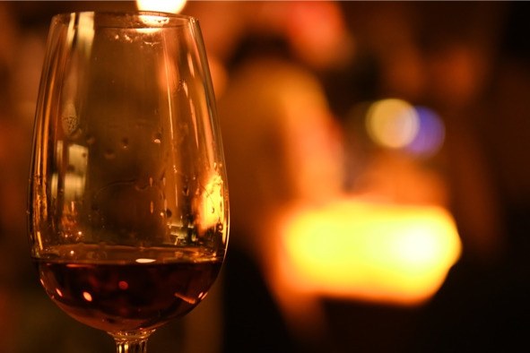
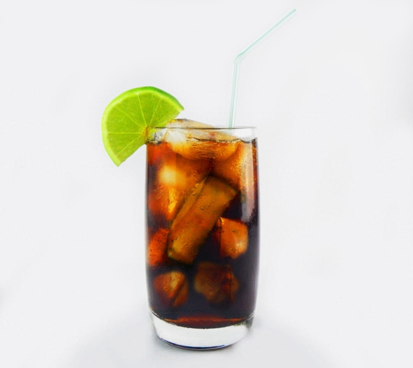

Понятие и виды рома
Ром – алкогольный напиток крепостью 35—76% (обычно 35—48%) об., изготовляемый путем сбраживания и нескольких перегонок побочных продуктов производства тростникового сахара: мелассы и патоки. Для улучшения органолептических свойств готовый дистиллят могут выдерживать в дубовых бочках, добавлять карамель и специи.
Единой классической технологии производства не существует, но настоящим ромом может считаться только спиртное из сахарного тростника.
Иностранное написание слова «ром» меняется в зависимости от региона производства:
– ron – в испаноговорящих странах;
– rhum – во франкоговорящих;
– rum – в англоговорящих.
Это не подделка и не попытка выдать за ром другое спиртное, во всех трех случаях имеется в виду один и тот же напиток.
Виды ромаИз-за отсутствия единых стандартов классифицировать ром сложно, иногда одинаковая маркировка у разных производителей указывает на совершенно разные напитки, однако некоторые общие виды рома выделить можно.
По технологии производства:
– Rhum industrielle («промышленный ром») – сырьем служит патока сахарного тростника, из которой предварительно удален сахар. Так производится около 90% всего рома в мире. Метод считается самым эффективным для сахарной промышленности, поскольку в процессе производства не остается отходов. Готовый сахар рафинируют и продают отдельно, а из отжатой патоки делают ром.
– Rhum agricole («сельскохозяйственный ром») – для получения напитка используют чистый сок тростника без отделения сахара. От этого метода почти отказались, так как он слишком дорогостоящий и позволяет делать ром только во время жатвы сахарного тростника. Преимуществ во вкусе или запахе готовый напиток не имеет. Сельскохозяйственный ром продолжают изготавливать лишь на Гаити и в некоторых заморских департаментах Франции.
– Tafia («тафья») – дистиллят из отходов патоки. Этот вид рома является наименее качественным. Его производят только в нескольких странах третьего мира для местного употребления. На экспорт подобная продукция не идет.
По выдержке, цвету и крепости:
– Blanco или Silver («светлый», «белый», «серебряный») – прозрачный ром без ярко выраженного вкуса. В большинстве случаев используется как основа для коктейлей.
– Gold («золотой») – выдержанный в дубовых бочках напиток. В процессе производства могут использоваться добавки: специи и карамель.
– Black или Dark («черный» или «темный») – выдерживается в обожженных дубовых бочках и обладает выраженных вкусом патоки. В некоторых сортах присутствуют нотки специй.
– Anejo («аньехо» или «выдержанный») – перед бутилированием находится в дубовых бочках более пяти лет (стандарт большинства стран). Культура употребления напоминает коньячную. Выдержанный ром пьют только в чистом виде. Специи отсутствуют.
– Aroma (ароматизированный) – ром с добавками фруктов: лимона, апельсина, кокоса или манго.
– Spice (со специями) – в составе есть специи и пряности, эта маркировка не является отдельным видом, а дополняет «золотые» и «темные» виды.
– Rum elixir («ромовый эликсир») – напиток крепостью 30—40% об. со сладким насыщенным вкусом, который пьют в чистом виде. По сути, это крепкие коктейли на основе рома.
– Strong («крепкий») – отличается повышенным содержанием спирта. Крепость некоторых представителей этого сорта достигает 76% об.
Краткая история ромаОфициальная история рома начинается с середины XVII века – именно тогда название rum впервые встречается в документах и литературе (например, в книге христианского проповедника Тертра, посвященной истории Антильских островов). Точно установлено, что напиток появился в Карибском бассейне, скорее всего, на острове Барбадос, но научно это не доказано. Жаркий и влажный климат Южной Америки создает идеальные условия для роста сахарного тростника, поэтому в то время как в Европе оттачивали искусство виноделия, на Кубе, Венесуэле, Ямайке, Панаме и других островах успешно учились добывать алкоголь из тростникового сиропа.
Версии происхождения названияПроисхождение названия точно не установлено, однако есть несколько версий той или иной степени достоверности:
– от сленгового английского термина rum – «странный, чудной»;
– от названий двух алкогольных напитков, популярных в Англии в середине XVII века, – ramboozle и rumfustian;
– от английских слов rumbullion и rumbustion, означавших «ярость, шум, веселье»;
– от голландского названия крупных стаканов – rummers;
– от цыганского слова rum, означающего «сильный, мощный, крепкий»;
– сокращение латинского термина saccharum – «сахар»;
– сокращение от латинского слова iterum – «повторение, еще раз»;
– видоизмененное французское arome – «аромат».
Как появился ромПервыми забродивший тростниковый сок начали пить рабы на плантациях. Технология производства была самой простой, без фильтрации и дистилляции, на выходе получался темный вязкий напиток крепостью до 12—16% об. В середине XIX века на плантациях сахарного тростника в испанской колонии Гаити произошло восстание рабов. В результате производство сахара на острове прекратилось, а основным поставщиком тростникового сахара в Европу стала Куба, где начался сахарный бум, повсюду строились новые заводы. Но возникла проблема: куда девать мелассу?
Сначала дешевый низкокачественный ром из мелассы на Кубе гнали кустарным способом едва ли не в каждом поместье (перегонные кубы привезли на остров еще конкистадоры). Напиток называли aguardiente («агуардиенте»), в переводе с испанского – «огненная вода», а попросту – самогон. Пили этот ром в основном бедняки, а экспортировать агуардиенте на материк было запрещено королевским указом, «дабы не способствовать ухудшению нравов». Но в 50-е годы XIX века испанская казна настолько опустела, что король отменил прежние запреты и объявил награду тому, кто найдет способ очищать агуардиенте и превращать его в напиток, «который не зазорно было бы употреблять лучшим людям страны».
В борьбу за награду включились управляющий коньячного дома француз Хосе Леон Бутелье и проживающий на Кубе испанский торговец дон Факундо Бакарди Массо. Объединив усилия, через семь лет совместной работы Бакарди и Бутелье совершили четыре важных открытия:
– нашли устойчивый штамм верховых дрожжей, сходных с коньячными. Дело в том, что кубинский тростник отличается повышенным содержанием сахара. Из-за этого температура сусла может неконтролируемо повышаться, что убивает обычные дрожжи и прерывает процесс брожения. Метод непрерывного брожения, открытый Бакарди и Бутелье, применяется до сих пор;
– изобрели технологию очистки агуардиенте особым активированным углем, полученным из древесины тропических деревьев и кокосовой скорлупы;
– рассчитали оптимальные пропорции смешивания рома из двух компонентов: практически не имеющей вкуса основы (очищенного aguardiente) и специального дистиллята (redestillado), придающего рому приятный привкус;
– разработали методику выдерживания рома в бочках из белого дуба.
Технология Бакарди дала возможность наладить промышленное производство, ром начал успешно конкурировать с виски и коньяком на международном рынке по качеству. В 1862 году появилась компания «Бакарди, Бутелье и компания», которая со временем стала самым известным производителем рома.
Ром и пиратыДревние мореплаватели не умели хранить на кораблях пресную воду. В трюмах она быстро протухала. Пираты Карибского моря решили эту проблему своеобразно, вместо воды они начали брать в дальние плавания ром, который не портился и позволял экипажу не погибнуть от жажды.
Захваченный пиратский ром также использовался вместо воды на военных кораблях Испании и Англии. Вплоть до 1970 года ром входил в официальную пайку моряков флота Ее Величества: матросам ежедневно выдавали по полпинты (284 мл) горячительного напитка для профилактики инфекций. Во времена пиратов бутылка рома была самой твердой валютой, котируемой во всех странах Карибского бассейна.
Особенности рома разных стран Кубинский ромНа Кубе производится более 40 видов рома, но на экспорт поставляются только пять. Известные марки: Bacardi (исторически этот ром считается кубинским, хотя производство уже давно расположено за пределами страны), Havana Club, Mulata, Caney, Legendario, Santero, Varadero.
Как и любой другой качественный ром, кубинский вариант изготавливается из отходов переработки сахарного тростника – мелассы. В черную сладкую патоку добавляют дрожжи, а получившуюся брагу подвергают двойной дистилляции. Готовый спирт разбавляют до крепости 50—55% об. и оставляют дозревать в дубовых бочках (новых или из-под хереса). Срок выдержки варьируется от нескольких недель до 25 лет.
Категории:
– белый (минимальная выдержка или ее отсутствие);
– золотой (1—2 года выдержки);
– темный (находился в обугленных бочках от 3 лет);
– выдержанный (провел в дубовых бочках 5—12 лет, редко дольше).
Ямайский ромОткрытая Колумбом, Ямайка почти полтысячи лет оставалась сахарной колонией сначала Испании, а потом и Англии. Ром как побочный продукт производства сахара стал популярен в XVII веке, а сегодня на этом спиртном держится вся экономика острова. Ямайский вариант рома не отличается легкостью или изысканным букетом: это крепкий тяжелый напиток с глубоким насыщенным вкусом.
Особенности:
– традиционный метод производства (двойная дистилляция в аламбике);
– местный тростник более сочный и сладкий, чем аналогичные растения с других Карибских островов;
– мелассу сбраживают 12 дней – в шесть раз дольше, чем на Кубе.
На российском рынке широко известны марки Captain Morgan, Appleton, Bepi Tosolini, а сами ямайцы предпочитают марку Wray&Nephew White Overproof.
Испанский ромНесмотря на то что в Испании сахарный тростник (а значит, и дистиллят мелассы) появился раньше, чем в карибских колониях, ром так и не стал для испанцев напитком номер один. Вероятно, потому что в стране уже успешно процветало виноградарство, и грубый неочищенный ром никак не мог составить конкуренцию изысканным винам и ароматным бренди.
По органолептическим свойствам испанский ром очень близок к кубинскому, да и сам термин нередко используется для обозначения сортов, изготовленных на территории бывших колоний Королевства или испаноговорящих землях. В Испании есть собственные плантации сахарного тростника, из которого производят ром без каких-либо характерных особенностей вкуса или нюансов букета, что не мешает отдельным брендам разбавлять линейку классических сортов пряными марками с пометкой Spiced.
Известные производители: Tobacco, Dos Maderas, Jamaica, Guajiro, Ron Cartavio, Clarke’s Court.
Доминиканский ромСтрана производит немало рома, но только 30% общего объема идет на экспорт: большую часть доминиканцы оставляют себе. История производства рома в Доминикане неразрывно связана с именами донов Бругаля, Эрасмо и Барсело: именно эти три господина стали основоположниками существующей и по сей день технологии получения мягкого и чуть сладковатого рома. Особенность технологии заключается в том, что благодаря местному климату доминиканский ром изготавливается из удивительно сочного тростника, собранного вручную. Кроме того, готовый напиток обязательно отправляют дозревать в дубовых бочках.
Как и на Кубе, доминиканский ром бывает белым, золотым, темным и выдержанным, однако к классическому перечню добавляется еще два вида: ароматизированный (добавляют фруктовый сок, отдушки, пряности и подсластители) и крепкий – содержит до 75,5% об. спирта.
Известные производители: Cayo Grande Club, Hispaniola, Matusalem, Contrabando, Brugal, Barselo, Bermudez, Siboney, Macorix.
Индийский ромИндия – страна, которая ассоциируется с ромом чуть ли не в последнюю очередь. И тем не менее именно это государство конкурирует за право называться родиной рома. Судя по дошедшим до нас археологическим данным, здесь пили забродивший сок сахарного тростника еще в IV в до н. э., но технику дистилляции так и не освоили, поэтому Индия не может считаться тем местом, где появился настоящий ром.
Индийский ром слаще и мягче аналогов из стран Карибского бассейна, обладает карамельно-бархатистым букетом и тягучим послевкусием. Правительство контролирует цены, поэтому индийский ром не может стоить дороже определенной (достаточно невысокой) планки, что делает напиток еще более привлекательным для туристов.
Известные производители: Old Monk, McDowell, Old Port, Contessa, Hercules.
Барбадосский ромПроизводится методом дистилляции в традиционном перегонном кубе, сырьем может быть не только меласса, но и тростниковый сок.
Категории:
– белый (выдержка 0—18 месяцев, мягкий вкус с дубовыми нотками, крепость 40% об.);
– крепкий (до 75% об., терпкий вкус);
– выдержанный (выдержка от пяти лет, сладковатый резкий вкус).
Известные производители: Mount Gay, Doorlys, Foursquare, Old Pascas, Malibu, R.L. Seales.
Тайский ромТайский ром отличается целым рядом привлекательных для русского туриста черт:
– доступной ценой;
– неплохим качеством;
– мягким сладковатым вкусом;
– богатым букетом с нотками корицы, цитруса, эвкалипта.
Недостаток только один – тайский ром не поставляют на экспорт.
Известные марки: Sang Som, Magic Alambic.
Советский ромВ 50-60-х годах XX века СССР выпускал собственный ром. Производство наладили после установления дружественных отношений с Кубой. В качестве сырья использовали тростниковый спирт, выпущенный в советских республиках Средней Азии, и черносливный морс, имитирующий выдержку в бочках. Ромовый эликсир (потому что такой напиток нельзя назвать настоящими ромом) экспортировали в более чем 20 стран, но советский ром так и не стал популярным.
Как пить ромВо времена пиратов ром пили прямо из бутылок без особых церемоний и этикета. Сейчас же сложно представить солидных джентльменов, потягивающих это крепкое спиртное «из горла». Ром можно пить тремя способами:
1. В чистом виде. Это лучший вариант, который позволяет насладиться вкусом. Белый (прозрачный) ром подают как аперитив и пьют комнатной температуры из водочных рюмок. Невыдержанный ром возбуждает аппетит, действуя не хуже, чем вино или водка. Оптимальная закуска – любые мясные блюда, миндаль, фрукты гриль.
Качественный темный или золотой ром лучше подавать после основной трапезы на дижестив. В этом случае культура употребления больше напоминает ритуал распития коньяка и виски. Выдержанным ромом на треть наполняют стаканы с толстым дном или коньячные бокалы.
Сначала напиток греют естественным теплом ладони, затем несколько секунд наслаждаются запахом и только потом отпивают небольшими глотками. Ценители рома считают закуску лишней, еду заменяет ароматная сигара и чашечка кофе. Однако если без закуски не обойтись, к темному рому можно подать фрукты, белый хлеб, твердые сыры, лосося (слабосоленого или холодного копчения), бурый рис. Иногда выдержанные сорта закусывают копчеными куриными крылышками и козьим сыром.
2. Со льдом. Лед в бокале немного снижает крепость и нивелирует аромат. Ценители скептически относятся к такому способу, считая, что так теряется индивидуальность рома. Со льдом обычно пьют ром среднего и низкого качества, заглушая холодом неприятный спиртовой запах.
3. Разбавляя другими напитками. В первую очередь используются соки. Выбор сока зависит от вида рома. Разбавлять белый ром лучше апельсиновым, лимонным, яблочным или грейпфрутовым соком, а золотые и темные виды – вишневым, гранатовым, клюквенным или черничным. Четких пропорций смешивания нет, обычно на одну часть рома добавляют от двух до четырех частей сока.
Еще одно популярное сочетание – ром с колой. Подходит для низкокачественных и белых видов, поскольку пить выдержанный ром с колой – кощунство и напрасная трата денег.
Выдержанный ром можно разбавить минералкой без газа, но не больше двух частей на одну часть рома. Иногда белый ром разводят содовой – обычной газированной водой или имбирным элем (ginger ale) – безалкогольной сладкой газировкой.
Ром неплохо сочетается с чаем, кофе и горячим шоколадом. Достаточно добавить 30—50 мл рома на кружку.
Популярные коктейли с ромом Mojito («Мохито»)С испанского слово mojito переводится как «немного влажный». Напиток появился в 1942 году в гаванском баре La Bodeguita del Medio, теперь это один из самых узнаваемых коктейлей в мире.
Состав:
– белый ром – 30 мл;
– содовая (или «Спрайт») – 60 мл;
– сахар (желательно тростниковый) – 1 столовая ложка;
– свежая мята – 5—6 листиков;
– лайм (в крайнем случае лимон) – 1 штука;
– кубики льда – 100 г.
Рецепт: разрезать лайм пополам и руками выдавить в бокал сок одной половинки. Добавить сахар. Мелко нарезать мяту и сложить в бокал с соком лайма. Измельченные листики истолочь деревянной колотушкой или обычной ложкой. Для красоты можно добавить еще несколько целых листиков мяты. Доверху наполнить бокал кубиками льда. Добавить ром, оставшееся в стакане пространство заполнить содовой или «Спрайтом». Пить через трубочку.
Pina Colada («Пина Колада»)По одной версии классический рецепт «Пина Колады» придумал в 1954 году бармен Рамон Марерро, работавший на Карибских островах. По другой – «Пина Колада» впервые появился в Пуэрто-Рико, а создание рецепта спонсировало министерство сельского хозяйства острова. Чтобы закрепить право на авторство напитка, в 1978 году правительство объявило коктейль «Пина Колада» национальной гордостью Пуэрто-Рико.
Состав:
– светлый (белый) ром – 30 мл;
– ананасовый сок – 90 мл;
– кокосовое молоко (или ликер «Малибу») – 30 мл;
– лед в кубиках – 50 г;
– сливки (11—15% жирности) – 20 мл (необязательно);
– ломтик ананаса или коктейльная вишенка – 1 штука.
Рецепт: все ингредиенты (кроме вишенки и ломтика ананаса) взбить в блендере до однородного состояния. Полученную смесь перелить в высокий бокал. Украсить коктейль вишенкой, долькой ананаса или взбитыми сливками. Подавать вместе с трубочкой.
Cuba libre («Куба либре») – ром-колаКоктейль Cuba libre (в переводе с испанского «свободная Куба») впервые приготовили в одном из баров Гаваны в 1900 году. За два года до этого кубинцы победили в войне с Испанией, получив независимость от метрополии. На их стороне воевали американские солдаты. Одним из этих военнослужащих был капитан Рассел, любивший смешивать ром, колу и сок лайма. Однажды он узнал, что у его любимого коктейля нет названия. Тогда Рассел воскликнул «?Por Cuba libre!» («За свободную Кубу!»). Так самый популярный тост кубинского побережья стал названием коктейля. В составе «Куба Либре» хорошо сочетаются кубинский ром и американская кола.
Состав:
– ром – 50 мл;
– кола – 100 мл;
– лайм – 1 четвертинка;
– лед в кубиках – 200 г.
Рецепт: наполнить высокий бокал (хайбол) кубиками льда. Выжать в бокал сок из четверти лайма. Налить ром и колу. Аккуратно перемешать ложечкой (появится пена). Украсить одним-двумя кусочками лайма. Подавать вместе с трубочкой.

Коктейль «Куба Либре», он же ром-кола
Planter’s Punch («Пунш Плантатора»)Первые рецепты пуншей появились примерно в XV веке в Индии. С хинди слово panch переводится как «пять», поскольку в те времена это был горячий напиток из пяти составляющих: рома (вина или бренди), сахара, лимонного сока, листового чая и горячей воды. Благодаря морякам британской Ост-Индской компании пунш в начале XVII века попал в Англию, а потом распространился по всей Европе и перекочевал через Атлантику в США. Со временем рецепт видоизменился, теперь вместо горячего чая в пуншах используются холодные фруктовые соки, что значительно улучшает вкус.
Состав:
– темный ром – 45 мл;
– апельсиновый сок – 35 мл;
– ананасовый сок – 35 мл;
– лимонный сок – 20 мл;
– сахарный сироп – 10 мл;
– гранатовый сироп «Гренадин» – 10 мл;
– биттер «Ангостура» – 4—6 капель (необязательно).
Рецепт: высокий бокал наполнить кубиками льда. Смешать в шейкере со льдом ром, соки, гренадин и сахарный сироп. Удалить из бокала талую воду. Перелить смесь из шейкера через барное ситечко (стрейнер) в бокал. Сверху добавить мелкий колотый лед и «Ангостуру». Украсить готовый коктейль долькой апельсина или ананаса. Пить через трубочку.
Hot orange («Горячий апельсин»)Один из немногих коктейлей с ромом, которые подают горячими.
Состав:
– белый ром – 50 мл;
– апельсиновый сок – 100 мл;
– клубничный сироп – 30 мл;
– клубника – 5 ягод.
Рецепт: взбить в блендере клубнику с сиропом. Смесь перелить в металлический чайник, добавить ром и апельсиновый сок. Не доводя до кипения нагреть, постоянно помешивая. Перелить коктейль в бокал или чашку. Украсить порезанной клубникой.
Известные марки рома Bacardi («Бакарди»)Как минимум последние 60 лет Bacardi – самая популярная марка рома в мире. Возможно, этого почетного звания она заслуживала и гораздо раньше, просто в прежние времена статистические исследования не носили такого всеобъемлющего характера. Основатель фирмы, Факундо Бакарди, разработал технологию изготовления рома, которая до сих пор считается стандартом качества.
Бренд переживал как взлеты, так и падения. Начиная с 50-х годов XX века компания Bacardi щедро финансировала восстание Фиделя Кастро и его соратников. Руководство пообещало сохранить рабочие места за всеми сотрудниками фирмы, пожелавшими в 1958 году присоединиться к отрядам повстанцев. Решившись на открытое противостояние действующим властям, владельцы постарались обезопасить компанию. Все патенты и технологии они перерегистрировали в США, а документацию, самое дорогое оборудование и уникальный штамм дрожжей эвакуировали в Пуэрто-Рико.
Семейство Бакарди резонно ожидало, что одержавший победу Фидель Кастро проявит элементарную благодарность по отношению к тем, кто помог ему в трудную минуту. Уверенности в завтрашнем дне добавляло и то, что дочь исполнительного директора компании вышла замуж за родного брата Фиделя – Рауля Кастро. Но в 1960 году все предприятия Bacardi были национализированы, а не успевшие покинуть остров члены семьи оказались за решеткой.
Компания понесла серьезные убытки: утратила огромный завод, склады, все запасы выдержанного рома. Главный офис из Сантьяго-де-Куба пришлось перенести в Сан-Хуан (Пуэрто-Рико). Но экстремальная ситуация дала мощный толчок к развитию компании, и через 20 лет она стала мощнее, чем прежде. Владельцы решили отомстить вероломным братьям Кастро. До начала 90-х годов XX века ни одна антикубинская провокация не обходилась без финансового участия клана Бакарди. Только на лоббирование законов о санкциях, направленных против правительства Кастро, компания потратила 3 млн долларов.
Члены семьи, родившиеся в изгнании, считают Кубу своей родиной и верят, что когда-нибудь туда вернутся. До сих пор на этикетке каждой бутылки рома Bacardi указывается: «Компания основана в 1862 году в Сантьяго-де Куба». И лишь в конце XX века по решению суда гордую надпись: «Кубинский ром» сменила малозаметная строка: «Сделано в Пуэрто-Рико».
Captain Morgan («Капитан Морган»)По объемам продаж ром Captain Morgan занимает второе место после Bacardi. Марку назвали в честь Генри Моргана – английского пирата, чье имя в середине XVII века наводило ужас на жителей испанских колоний. Лихой капитан во главе собственной эскадры занимался морским разбоем, грабил и жег богатые города побережья Карибского моря. В 1673 году король Англии Карл II посвятил Моргана в рыцари, присвоил ему чин адмирала и назначил губернатором Ямайки.
Изначально бренд принадлежал компании Seagram, владелец которой, канадец Сэмюэль Бронфман, во времена «сухого закона» контрабандой поставлял спиртное в США и на этом заработал свой первый капитал. В 1944 году Seagram приобрела Лонг-Понд – старинную ямайскую винокурню, построенную в конце XVIII века. На ней с незапамятных времен изготавливали ром: достаточно качественный, но ничем особенным не отличавшийся от других сортов ямайского рома. Постоянные заказчики винокурни, аптекари братья Леви, настаивали этот напиток на пряностях, и вот тогда он действительно приобретал необычный вкус, в котором доминировала ваниль. Мистер Бронфман купил рецепт у братьев Леви.
Из-за налоговых льгот в 50-е годы ХХ века Бронфман перенес производство рома в Пуэрто-Рико. Правительство Ямайки, заботясь о сохранении рабочих мест, поставило Seagram ультиматум: за возможность на законных основаниях указывать на этикетке Captain Morgan словосочетание «ямайский ром» (а это серьезное преимущество) компания обязывалась уступить часть прав на бренд местному производителю. С тех пор и до сегодняшнего дня весь ром «Капитан Морган», который продается на Ямайке, изготавливает фирма J. Wray and Nephew Ltd. В другие страны напиток не экспортируется.
В 2001 году бренд приобрела компания Diageo. С 2012 года производство рома «Капитан Морган» перенесено на Британские Виргинские острова. Напиток лишь отчасти может считаться ямайским, так как его делают из трех сортов рома: ямайского, барбадосского и гайанского.
Havana Club («Гавана Клаб»)За право выпускать ром под названием Havana Club уже третье десятилетие идет спор между двумя крупными мировыми производителями алкоголя – компаниями Pernod Ricard и Bacardi. Ставки нешуточные: по объемам продаж этот напиток, изготовленный на кубинском предприятии (часть которого принадлежит Pernod Ricard), занимает пятое место в мире. Только в 2015 году французская компания продала 36 млн литров рома «Гавана Клуб». С другой стороны, на рынке рома в США доля Havana Club производства Bacardi составляет около 30%.
Компанию по производству рома основал на Кубе в 1880 году испанец Хосе Аречабала Альдама. Дата рождения бренда Havana Club – 19 марта 1934 года. В этот день наследники Аречабалы открыли новый ликеро-водочный завод, построенный взамен разрушенного ураганом. Хотя торговая марка и была совершенно новой, бренд Havana Club стал квинтэссенцией всего опыта, накопленного мастерами компании за полвека. В 1958 году предприятие произвело 6 млн л рома, почти вдвое больше, чем «Бакарди». Но в 1959 году после революции на Кубе все имущество компании было национализировано, а семья Аречабала покинула остров.
Вплоть до 90-х годов XX века кубинский ром экспортировали в основном в страны социалистического лагеря: рынок США для него был закрыт. Однако в 1976 году правительство Кубы перерегистрировало на себя торговую марку «Гавана Клаб», поскольку срок ее регистрации семьей Аречабала истек. В 1994 году французская компания Pernod Ricard заключила договор с Corporacion Cuba Ron и приобрела 50% акций предприятия, производящего знаменитый ром. В том же году семейство Аречабала продало фирме Bacardi юридические права на торговую марку Havana Club и оригинальный рецепт напитка. Bacardi наладила его выпуск в Пуэрто-Рико. С тех пор не прекращается череда судебных тяжб между двумя гигантами алкогольной индустрии. В разбирательства вовлечены ВТО, ЕС и Конгресс США.
Этикетку бутылки с кубинским напитком украшает надпись: «El ron de Cuba» («кубинский ром»). В свою очередь, суд обязал компанию «Бакарди» указывать, что ром произведен в Пуэрто-Рико. Зато его делают по созданному более 80 лет назад оригинальному рецепту, в котором наверняка были нюансы, известные лишь семье Аречабала.
Old Monk («Олд Монк» или «Старый Монах»)Напиток кажется необычным потребителям, привыкшим к легким светлым сортам карибского рома. Выдержанный «Олд Монк» – темный и густой. Необычный, бархатисто-шоколадный вкус привлекает внимание, ром хорош как в чистом виде, так и в коктейлях. Если бокал с ним немного покрутить, то на стекле останутся потеки. «Олд Монк» производится из натурального, экологически чистого сырья, без каких-либо синтетических добавок.
Old Monk изготавливают с 1954 года по старинным, проверенным временем рецептам на заводе в Газиабаде. За все время существования компания ни разу не тратила бюджет на рекламную кампанию, зато не жалеет средств на контроль качества продукции и эффектную упаковку. Ром разливают в добротные бутылки с привлекательными этикетками, откуда жизнерадостно улыбается упитанный буддийский монах.
Zacapa («Сакапа»)Сакапа – город на востоке Гватемалы, 100-летнюю годовщину со дня основания которого в 1976 году отмечала вся страна. К праздничной дате Алехандро Бургалета, старший купажист компании Industrias Licoreras de Guatemala, создал новый ром.
Industrias Licoreras de Guatemala – крупнейший гватемальский производитель алкоголя. Фирма основана в 1939 году братьями Ботран и до сих пор принадлежит их потомкам. В 70-е годы XX века ром Botran считался лучшим ромом страны.
Точный рецепт Zacapa – коммерческая тайна, однако известно, что ром производится из чистого сброженного сока сахарного тростника (без добавления мелассы). Спирты стареют на складах, расположенных в горной местности в окрестностях города Кетсальтенанго, на высоте 2300 м над уровнем моря. Воздух здесь разреженный, а средняя температура в складских помещениях составляет +17° C. В таких условиях ром стареет медленно и приобретает особый вкус. Напиток производится по испанской системе «солера», предполагающей смешивание спиртов разных сроков выдержки. Сперва ром выдерживают в бочках из-под бурбона и портвейна, затем не менее двух лет – в бочках из-под хереса, приобретенных у компании Pedro Ximenez. Последний год перед розливом напиток проводит в бочках (объемом 20 000 л) из американского белого дуба.
Кашаса – бразильский вариант ромаКашаса (Cachaca) – это алкогольный напиток прозрачного или светло-коричневого цвета крепостью 38—50% об., получаемый путем дистилляции забродившего сока сахарного тростника с последующим выдерживанием спирта в бочках 1—15 лет. Ценители часто сравнивают вкус кашасы с ромом. Это неудивительно, поскольку технологии производства похожи, но не идентичны.
«Изобрели» кашасу африканские рабы, трудившиеся на бразильских плантациях сахарного тростника. Невольники давили и пили забродивший на жаре тростниковый сок. Позже плантаторы додумались перегонять брагу в медных кубах. Этот момент и считается началом производства кашасы.
По иронии судьбы в XVII веке именно за кашасу португальские плантаторы покупали новых рабов у африканских племен. За бочонок дурманящей «огненной воды» вожди были готовы продать не только соплеменников, но и близких родственников.
Разница между ромом и кашасойОтличия:
– большинство видов рома делают из мелассы, для кашасы используется как меласса, так и чистый сок сахарного тростника;
– ром дистиллируют минимум два раза, а кашасу перегоняют всего один раз;
– выдержка рома редко превышает пять лет, в свою очередь, кашаса может проводить в бочках 10—15 лет, хотя зачастую этот срок не превышает двух-трех лет;
– ром выдерживают только в дубовых бочках (новых или из-под других напитков), бочки для кашасы делают из местной древесины: каштанов, вишни, бальзамического или миндального дерева;
– в состав рома могут входить специи и карамель, в кашасе обычно нет добавок.
В плане качества ром лучше за счет нескольких перегонок, но по разнообразию вкусовых оттенков кашаса выигрывает благодаря более широкому выбору древесины.
Как пить кашасуБразильцы пьют кашасу в чистом виде комнатной температуры небольшими глотками из специальных рюмочек – martelinho (в переводе на русский – «маленький молоточек»). В наших реалиях можно использовать обычные водочные рюмки.
Чтобы почувствовать вкус кашасы, напиток нужно пару секунд подержать во рту, перекатывая по языку, и только потом сделать глоток. Кашасу закусывают ломтиками лимона и тростниковым сахаром.
Известные марки кашасы: Pitu, Germana, Caninha 51, Velho Barreiro и Paduana.
На основе кашасы делают только один известный коктейль – Caipirinha («Кайпиринья»), рецепт которого придумали на легендарных пляжах Копакабаны. Напиток подают в барах всех туристических центров Бразилии.
Состав:
– кашаса – 50 мл;
– лайм – половинка;
– тростниковый сахар – 2 чайные ложки;
– колотый лед.
Рецепт: разрезать половинку лайма на четыре части, положить дольки в бокал. Добавить сахар, раздавить дольки скалкой или ложкой, сок лайма должен растворить сахар. Доверху наполнить стакан колотым льдом. Влить кашасу, перемешать. Украсить коктейль лаймом, пить через трубочку.